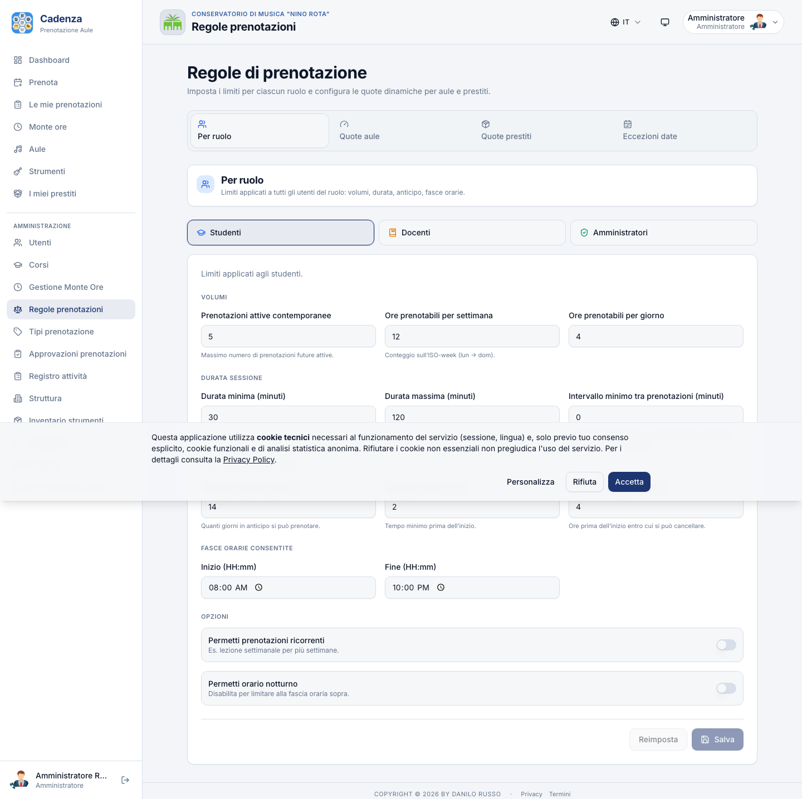
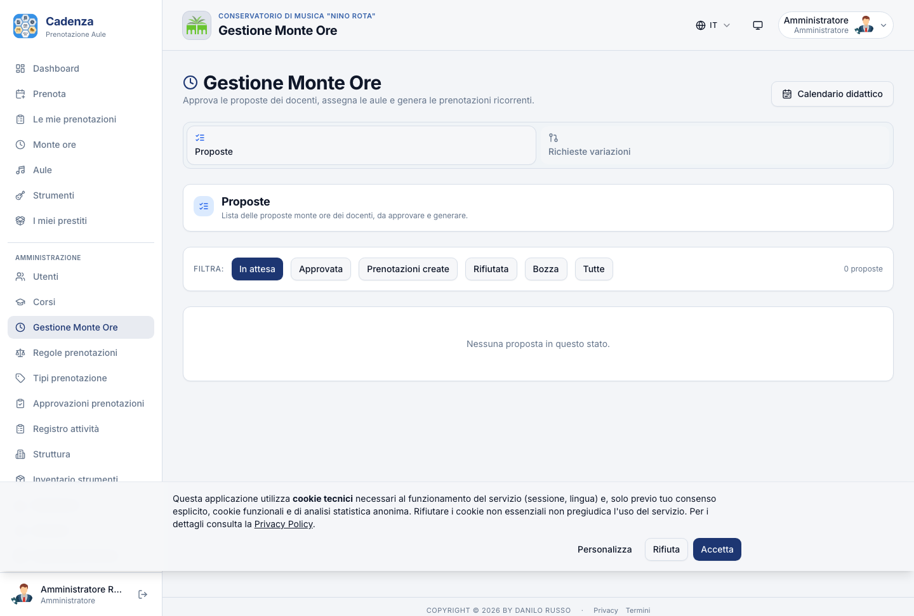
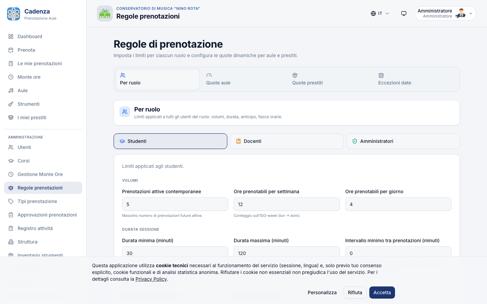
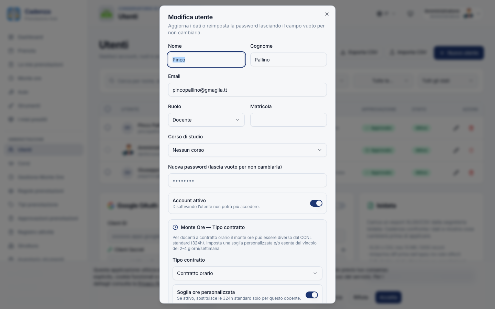
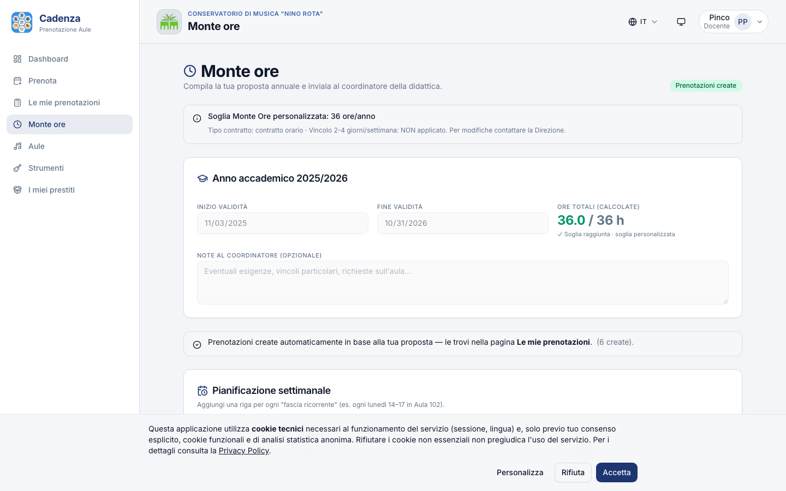

Software italiano, open-source, offerto gratuitamente dall'autore. L'unico costo a carico dell'Istituzione è il server cloud.
Quindici minuti, cinque domande
Perché la gestione aule oggi nei Conservatori è inefficiente — Excel, calendari personali, messaggi WhatsApp, conflitti continui.
Una web-app pronta all'uso, sviluppata da un docente del Conservatorio per i Conservatori italiani.
Funzionalità e prezzi a confronto con le due alternative reali: ASIMUT (leader internazionale) ed EasyRoom (Gruppo Zucchetti, 9 conservatori AFAM).
Il software gratis, ~ € 38/mese per server e manutenzione assistita, attivazione in 1 settimana.
Quattro decisioni concrete da prendere oggi — un sotto-dominio, un VPS in affidamento diretto, un account admin, un'ora di onboarding.
Il problema
Excel della segreteria, Google Calendar dei docenti, gruppi WhatsApp degli studenti. Ogni informazione è in 3 posti, nessuno è autoritativo.
Due studenti che si trovano nella stessa aula alla stessa ora. Lezioni interrotte. Scuse, riprogrammazioni, mail di chiarimento.
Ore di telefono per coordinare cambi aula, autorizzare richieste, distribuire le sale concerto. Tempo sottratto alla didattica.
Le 324 ore CCNL gestite a mano: foglio Excel, controllo manuale, contratti orari trattati ad-hoc. Errori amministrativi continui.
Strumenti in prestito: dove sono? a chi? da quando? Quaderno cartaceo o file Drive che nessuno aggiorna in tempo reale.
Dati di studenti e docenti su Google e WhatsApp. Audit log inesistente. Provv. Garante 06/2021 — esposizione legale latente.
Costo nascosto stimato per un Conservatorio di taglia media (1.500-2.500 utenti): ~ 200 ore/anno di personale di segreteria + decine di conflitti mai sanati + esposizione legale GDPR.
La proposta
Una web-app installata su un server del Conservatorio, accessibile da qualsiasi browser e da smartphone (PWA), in italiano, con il supporto dell'autore.
Sviluppata da un docente del Conservatorio: parla di aule, sale prove, sale concerto, monte ore, sospensioni didattiche, contratti orari, sessioni d'esame con il vocabolario corretto.
Il software è già completo, testato e in funzione: 550 test automatici verdi al 99% di pass-rate, 0 vulnerabilità note, deploy in singola macchina.
Il software è gratis, niente licenza, niente canoni, niente fee per utente, niente gara d'appalto. Si paga solo l'infrastruttura cloud.
Cosa fa Cadenza · 1 di 2
Studenti, docenti, ospiti vedono in un colpo d'occhio quali aule sono libere, quando, e con quali strumenti. Drag-and-drop per spostare una prenotazione.
L'anti-conflitto è imposto a livello del database (Postgres EXCLUDE constraint). Tecnicamente impossibile avere due prenotazioni sovrapposte sulla stessa aula.
Configurabili per studente, docente, admin: durata massima, ore settimanali, anticipo minimo, fasce orarie, cooldown tra prenotazioni. Eccezioni temporanee per finestre esami o chiusure.
Le sale concerto richiedono approvazione admin. Coda dedicata in dashboard. Email automatiche a richiedente e organizzatore. Log immutabile di chi ha approvato cosa e quando.
Schermo nell'atrio: agenda della giornata, prossimi concerti pubblici, avvisi della Direzione. Rotazione automatica, niente staff dedicato.
Studenti e docenti prenotano da Telegram con un comando. Promemoria automatico 30 min prima della lezione. Niente app da installare.
Cosa fa Cadenza · 2 di 2
La verticalità che nessun competitor offre: il piano annuale di insegnamento (CCNL 324h, 2-4 giorni a settimana, finestra ottobre-giugno) gestito digitalmente. Il docente propone, l'admin approva, il sistema genera le prenotazioni.
Catalogo strumenti di proprietà del Conservatorio: contrabbassi, fagotti, archi e strumenti rari. Workflow di prestito con scadenze, riconsegne, quote per famiglia di strumenti, PDF firmato.
Cookie banner, consensi tracciati, export dati su richiesta, cancellazione (art. 17), retention 24 mesi automatica, audit log forensic firmato HMAC. Conforme Provv. Garante 06/2021.
Accesso amministrativo con doppia autenticazione via email obbligatoria. Password policy AGID (min 10 caratteri, maiuscola, cifra). Anti-lockout: impossibile rimanere senza admin per errore.
Backup giornaliero automatico off-site (Hetzner Storage Box). Restore testato: RTO < 1 secondo misurato. 34 vincoli FK validati a ogni drill. Niente perdita di dati possibile.
Schermate reali del software


Schermate reali del software



Tecnologia identica al software in vendita: la stessa palette grafica, la stessa tipografia (Inter), gli stessi componenti d'interfaccia che il personale del Conservatorio userà ogni giorno. Quello che vede in queste schermate è esattamente ciò che troverà al go-live.
Confronto · funzionalità
ASIMUT: leader internazionale di nicchia (1 cliente in Italia). EasyRoom: modulo della suite EasyAcademy del Gruppo Zucchetti (~9 conservatori AFAM). Cadenza: italiana, gratis, open-source.
| Funzionalità chiave | ASIMUT | EasyRoom | Cadenza | Vincitore |
|---|---|---|---|---|
| Prenotazione self-service | ✅ | ✅ | ✅ | parità |
| Workflow approvazioni | ✅ | ✅ | ✅ | parità |
| Anti-conflitto garantito a livello DB | ◐ validator | ◐ | ✅ Postgres EXCLUDE | Cadenza |
| Monte Ore docente CCNL 324h | ❌ | ❌ | ✅ workflow completo | Cadenza |
| Inventario strumenti musicali | ❌ | ❌ | ✅ 5 stati · PDF prestito | Cadenza |
| Display kiosk pubblico avanzato | ✅ semplice | ✅ semplice | ✅ concerti + avvisi | Cadenza |
| Bot messaging (Telegram) | ❌ | ❌ | ✅ | Cadenza |
| Heatmap analytics 7×24 + no-show | ◐ | ◐ | ✅ + export CSV/PDF | Cadenza |
| GDPR Garante PA italiana (Provv. 06/2021) | ◐ generico | ◐ | ✅ nativo | Cadenza |
| Audit log forensic firmato (HMAC) | ❌ | ❌ | ✅ | Cadenza |
| Integrazione anagrafica Isidata (CSV/XLSX) | ❌ | ❌ | ✅ + diff & preview | Cadenza |
| Integrazione SIS Esse3 (Cineca) | ◐ | ✅ nativa | ❌ (roadmap) | EasyRoom |
| Accesso fisico (badge / RFID) | ◐ | ✅ EasyBadge | ❌ (roadmap) | EasyRoom |
| SPID / CIE login | ❌ | ◐ | ❌ (roadmap) | — |
| Open-source · codice del Conservatorio | ❌ chiuso | ❌ chiuso | ✅ | Cadenza |
| Pricing trasparente, niente lock-in | ❌ custom | ❌ custom + dichiarazione di unicità | ✅ pubblico | Cadenza |
✅ presente · ◐ parziale · ❌ assente · Le righe evidenziate sono punti di forza Cadenza. ASIMUT vince in nessun ambito specifico per il Conservatorio italiano. EasyRoom vince su SIS Esse3 e RFID — entrambi non rilevanti per Monopoli oggi.
Confronto · prezzi
Per un Conservatorio con ~ 2.000 utenti totali (studenti + docenti + staff), iva esclusa, IVA esclusa, listino pubblico maggio 2026.
L'offerta per Monopoli
Tutto rientra in affidamento diretto sotto soglia (D.Lgs. 36/2023, art. 50 — soglia € 140.000). Niente gara d'appalto, niente CIG dedicato, niente dichiarazione di unicità.
L'impatto economico
Su 10 anni, scegliere Cadenza invece di una soluzione commerciale equivalente libera € 80.000-220.000 di bilancio. In termini concreti:
Docente di II fascia (lordo amministrazione), oppure 1-2 docenti aggiuntivi a contratto orario per 2-3 anni accademici.
O in alternativa 2 organi a canne di pregio per le sale concerto, o un parco strumenti rinnovato per due classi di studio.
Da € 5.000 ciascuna, per studenti meritevoli del triennio o del biennio specialistico, distribuite in 5-10 anni accademici.
Insonorizzazione completa + impianto audio professionale + climatizzazione, per le aule più richieste e con maggior usura.
La scelta non è "Cadenza vs ASIMUT" come strumento — è "Cadenza vs un docente in più" o "Cadenza vs un pianoforte". La spesa che si risparmia su una soluzione commerciale ha utilizzi alternativi tangibili e misurabili sul bilancio annuale del Conservatorio.
Operatività
Quattro decisioni concrete dell'amministrazione, una settimana di calendario, zero rischio.
cadenza.consmonopoli.itDomande aperte alla Direzione
Cadenza viene installata in parallelo all'attuale gestione. Se al termine del pilota non convince, si torna indietro a costo zero (il VPS si dismette in 5 minuti). Il rischio è quantificato: € 38 per 30 giorni di prova.
L'importo annuo (€ 462) è ampiamente sotto soglia per affidamento diretto. Aruba Cloud (datacenter italiano AGID) o Hetzner Cloud (datacenter EU GDPR) sono entrambi compatibili con la fatturazione PA SDI. Niente gara, niente CIG dedicato.
Cadenza guadagna molto dall'avere un docente come ponte fra l'autore e il Conservatorio: orientamento sulle priorità, validazione delle soluzioni proposte ai colleghi, vetrina sul mondo dei conservatori italiani. Effort stimato: ~ 2 ore al mese.